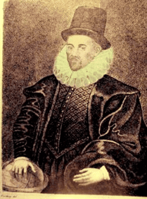
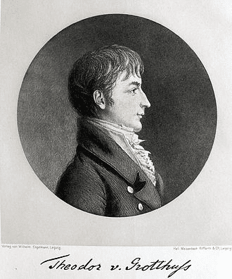
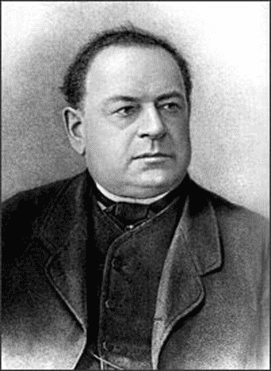
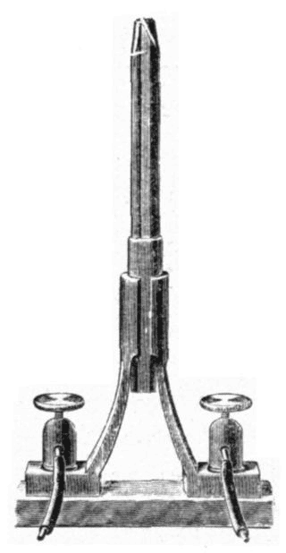
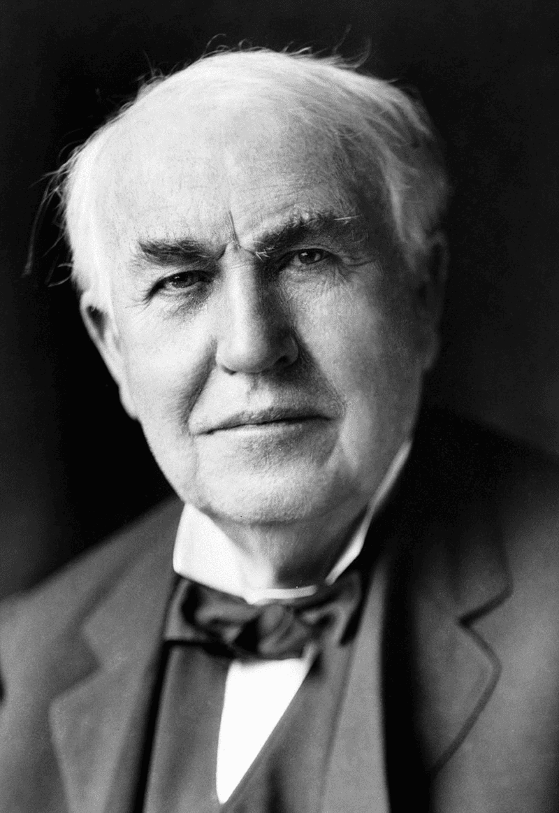

Электризация

Ю. А. Храмов приписывает Фалесу открытие свойства янтаря притягивать лёгкие предметы при его электризации трением и свойства магнита притягивать железо. Это были первые предпосылки научных сведений об электричестве и магнетизме
Термин электричество
 Термин электричество (electricity) введён английским естествоиспытателем, лейб-медиком королевы Елизаветы Тюдор Вильямом Гилбертом в его сочинении «О магните, магнитных телах и о большом магните — Земле» (1600 год)
Электризация — это накопление на теле заряда одного типа, причём заряды одного знака отталкиваются, а заряды разного знака притягиваются друг к другу и компенсируются при соединении, делая тело нейтральным (незаряженным).
Первая электростатическая машина
Желая повторить и проверить опыты Гильберта, Герике изобрел прибор для получения электрического состояния, который если и не может быть назван электрической машиной в настоящем значении этого слова, потому что в нём недоставало конденсатора для собирания электричества, развиваемого трением, то все же послужил прототипом для всех поздних устраиваемых электрических открытий. Сюда прежде всего следует отнести открытие электрического отталкивания, которое было неизвестно Гильберту.
Первый конденсатор
Голландский профессор из г. Лейдена Питер Мюсхенбрук (Мушенбрук) в 1745 г. взял стеклянную банку (колбу), наполненную водой (которая являлась проводником), опустил в неё медную проволоку висевшую на кондукторе электростатической машины, и попросил своего помощника вращать шар машины. При этом он правильно предположил, что заряды, поступившие в кондуктора, будут накапливаться в стеклянной банке. После того, как по его мнению, в банке накопилось достаточное количество зарядов, он решил левой рукой отсоединить медную проволоку. При этом ощутил сильный удар.
Закон Кулона
Шарль Огюсте́н де Куло́н (1736 — 1806 гг.)
Ещё в начале 1770-х годов, вернувшись с Мартиники, Кулон активно занялся научными исследованиями. Публиковал работы по технической механике (статика сооружений, теория ветряных мельниц, механические аспекты кручения нитей и т. п.). Кулон сформулировал законы кручения; изобрёл крутильные весы, которые сам же применил для измерения электрических и магнитных сил взаимодействия.
С 1785 по 1789 год опубликовал семь мемуаров, где сформулировал закон взаимодействия электрических зарядов и магнитных полюсов (закон Кулона), а также закономерность распределения электрических зарядов на поверхности проводника. Ввёл понятия магнитного момента и поляризации зарядов.
Электрофизиология
Луиджи Гальвани препарировал лягушку, а неподалеку стояла электростатическая машина. Когда острие скальпеля коснулось бедренных нервов, то, как писал Гальвани, «немедленно все мышцы конечностей начали так сокращаться, что казались впавшими в сильнейшие тонические судороги».
Источник постоянного тока
Опытным путем Вольта расположил металлы в ряд таким образом, что чем дальше друг от друга отстоят они в этом ряду, тем более сильный эффект производят. Химики с удивлением обнаружили, что в таком же порядке изменяется и химическая активность металлов. В настоящее время этот ряд называется рядом напряжений или, точнее, рядом электродных потенциалов.
Электрическая дуга
Одним из выдающихся успехов учёного в экспериментах с гальванической батареей стало открытие в 1802 году явления электрической дуги и доказательство возможности её практического применения для целей плавки, сварки металлов, восстановления их из руд и освещения. Как отмечал впоследствии М. А. Шателен: «опыты Петрова можно считать исследованиями, положившими начало современной электрометаллургии в дуговых печах». Свое открытие учёный описывает следующим образом:
Если на стеклянную плитку или на скамеечку со стеклянными ножками будут положены два или три древесных угля, способные для произведения светоносных явлений посредством гальвани-вольтовской жидкости, и если потом металлическими изолированными направителями (directores), сообщёнными с обоими полюсами огромной баттереи, приближать оные один к другому на расстояние от одной до трёх линий, то является между ними весьма яркий белого цвета свет или пламя, от которого оные угли скорее или медленнее загораются и от которого тёмный покой довольно ясно освещён быть может.
Электролиз
Осенью 1805 года, в возрасте 20 лет, Гротгус написал свою первую фундаментальную статью, посвященную изучению процесса электролиза воды. Эта статья была опубликована в Риме в 1806 году.
В этой работе Гротгус объяснил, почему во время процесса электролиза воды водород и кислород выделяются только на электродах (и при том на разных), а не во всем объеме раствора, как это ожидалось. Это явление, которое наблюдали А. Карлайл и Дж. Николсон вскоре после открытия Вольтова столба, стало известным под названием «Парадокс Николсона». Гротгус экспериментально подтвердил данные о том, что некоторые металлы выделялись на отрицательном полюсе источника тока, связанном с медным диском, и начинали процесс роста кристаллов в направлении гальванического тока, в то время как кислород выделялся на положительном полюсе, связанном с цинковым диском. Некоторые металлы не выделялись на отрицательном полюсе источника тока, и в этом случае на нём наблюдалось выделение водорода, а на положительном полюсе при этом образовывался осадок оксида.
Действие тока на магнит
Ханс Кристиан Э́рстед (1777—1851 гг.)
Главное открытие Эрстеда — впервые экспериментально установлена связь между электрическими и магнитными явлениями.Уже в июне 1820 года Эрстед печатает на латинском языке небольшую работу под заголовком: «Опыты, относящиеся к действию электрического конфликта на магнитную стрелку». В ней учёный пишет резюме: «Основной вывод из этих опытов состоит в том, что магнитная стрелка отклоняется от своего положения равновесия под действием вольтаического аппарата и что этот эффект проявляется, когда контур замкнут, и он не проявляется, когда контур разомкнут. Именно потому, что контур оставался разомкнутым, не увенчались успехом попытки такого же рода, сделанные несколько лет тому назад известными физиками».
Закон о взаимодействии токов
Андре́-Мари́ Ампе́р (1775 — 1836 гг.)
Его основные физические работы выполнены в области электродинамики. В 1820 он установил правило для определения направления действия магнитного поля на магнитную стрелку, известное ныне как правило Ампера; провёл множество опытов по исследованию взаимодействия между магнитом и электрическим током; для этих целей создал ряд приборов; обнаружил, что магнитное поле Земли влияет на движущиеся проводники с током. В том же году открыл взаимодействие между электрическими токами, сформулировал закон этого явления (закон Ампера), развил теорию магнетизма, предложил использовать электромагнитные процессы для передачи сигналов.
О сайте
Цель сайта:
▪ краткая история ТОЕ
▪ краткая история ТОЕ
Закон Био́-Савáра-Лапла́са
Физический закон для определения вектора индукции магнитного поля, порождаемого постоянным электрическим током. Был установлен экспериментально в 1820 году Био и Саваром и сформулирован в общем виде Лапласом.
Закон Био — Савара — Лапласа играет в магнитостатике ту же роль, что и закон Кулона в электростатике. Закон Био — Савара — Лапласа можно считать главным законом магнитостатики, получая из него остальные её результаты.
Закон Ома
В своей опубликованной в 1827 году работе Ом формулирует закон и позднее даёт его теоретический вывод исходя из теории, аналогичной теории теплопроводности Фурье.
Открытие Ома, давшее впервые возможность количественно рассмотреть явления электрического тока, имело и имеет огромное значение для науки; все теоретические (Гельмгольц) и опытные (Бетц, Кольрауш, комиссия британской ассоциации) проверки показали полную его точность; закон Ома есть истинный закон природы.
Дальнейшие работы Ома по электричеству касались вопросов униполярной проводимости (1830) и нагревания проводов током (1829).
Закон электромагнитной индукции
В1821 году статью «О некоторых новых электромагнитных движениях и о теории магнетизма», где показал, как заставить намагниченную стрелку непрерывно вращаться вокруг одного из магнитных полюсов. По существу, эта конструкция представляла собой ещё несовершенный, но вполне работоспособный электродвигатель, впервые в мире осуществивший непрерывное превращение электрической энергии в механическую. Имя Фарадея становится всемирно известным.
Первая электрическая машина
В 1834 году переехал в Кёнигсберг, где в университете преподавал его младший брат Карл Якоби. Увлечения физикой привели Якоби к серьёзному изобретению — первому в мире электродвигателю с непосредственным вращением рабочего вала. До изобретения Якоби существовали электротехнические устройства с возвратно-поступательным или качательным движением якоря. Якоби писал об одном из них:
« такой прибор будет не больше, чем забавной игрушкой для обогащения физических кабинетов, его нельзя будет применять в большом масштабе с какой-нибудь экономической выгодой... »
Целью Якоби было создание более мощного электродвигателя с возможностью его практического применения. В 1834 году он создал электродвигатель, основанный на принципе притяжения и отталкивания между электромагнитами.
Закон Джоуля-Ленца
Закон Джо́уля — Ле́нца — физический закон, дающий количественную оценку теплового действия электрического тока. Установлен в 1841 году Джеймсом Джоулем и независимо от него в 1842 году Эмилием Ленцем.(на партретах справо налево Джоуль,Ленц)
Электрическая свеча(Свеча Яблочкова)
Свеча Яблочкова оказалась проще, удобнее и дешевле в эксплуатации, чем угольная лампа А. Н. Лодыгина, не имела ни механизмов, ни пружин. Она представляла собой два стержня, разделённых изоляционной прокладкой из каолина. Каждый из стержней зажимался в отдельной клемме подсвечника. На верхних концах зажигался дуговой разряд, и пламя дуги ярко светило, постепенно сжигая угли и испаряя изоляционный материал. Яблочкову пришлось очень много поработать над выбором подходящего изолирующего вещества и над методами получения подходящих углей.
Законы Киргофа
Кирхгоф, будучи прекрасным знатоком математики, обладал в то же время редким умением плодотворно прилагать эти знания к труднейшим вопросам математической физики, в области которой преимущественно работал. Уже первые его работы о распространении электричества по пластинкам (1845—1847) послужили исходным пунктом для множества работ других учёных. Целый ряд последующих работ по электричеству был посвящён вопросам о распределении электричества в проводниках, о разряде конденсаторов, о течении электричества по подводным кабелям и т. д.; особенно важна работа об индукции токов (1849), содержащая описание способа определения электрического сопротивления проводников в абсолютной мере, и два больших мемуара об индуктированном магнетизме (1853 и 1876).
Первая динамо-машина
Дина́мо-маши́на или дина́мо (иногда в просторечии "динамка")— устаревшее название генератора постоянного тока.
Динамо-машина была первым электрическим генератором, который стал применяться в промышленности. В дальнейшем её вытеснили генераторы переменного тока, так как переменный ток поддаётся трансформированию.
В наше время термин динамо используется в основном для обозначения небольшого велосипедного или туристического генератора, питающего велосипедную фару, а также небольшого генератора, встроенного в электрические фонарики.
Лампа Лодыгина
Да будет свет!
Лодыгин первым предложил применять в лампах вольфрамовые нити (в современных электрических лампочках нити накала именно из вольфрама) и закручивать нить накаливания в форме спирали. Также Лодыгин первым стал откачивать из ламп воздух, чем увеличил их срок службы во много раз. Молибденовые и вольфрамовые лампы Лодыгина демонстрировались на Всемирной выставке в Париже, состоявшейся в 1900 году. За год до этого Петербургский электротехнический институт наделил изобретателя званием почетного инженера-электрика. В 1906 году патент на лампу с вольфрамовой нитью купила известная компания «General Electric Company», в которую позднее влилось предприятие Эдисона.
Лампа накаливания
«Мы сделаем электричество настолько дешёвым, что только богатые будут жечь свечи»
21 октября 1879 года Эдисон закончил работу над лампочкой накаливания с угольной нитью, ставшей одним из крупнейших изобретений XIX века. Величайшая заслуга Эдисона была не в разработке идеи лампы накаливания, а в создании практически осуществимой, широко распространившейся системы электрического освещения с прочной нитью накала, с высоким и устойчивым вакуумом и с возможностью одновременного использования множества ламп
Первый телефон
Патент № 186787 - Самый дорогой в мире
Первый телефон был изобретен Антонио Меуччи, но Александру Грэхему Беллу приписывают разработку первого практического телефона.
Изобретение телефона стало кульминацией работы, проделанной многими людьми, и привело к целому ряду судебных исков, касающихся патентных претензий нескольких лиц и многочисленных компаний.
Телефон Белла был построен на следующем принципе. Если взять гибкую железную пластину и поместить ее вблизи от постоянного магнита, то при колебаниях (производимых звуком) в пластине будет возникать электрический ток. Ток будет иметь свое магнитное поле и, в зависимости от положения пластины, будет то повышать, то понижать магнитное поле магнита. Если вокруг магнита разместить катушку с обмоткой, то при колебаниях магнитного поля постоянного магнита в ней буде возникать переменный ток, который можно передавать обмотке другого такого же постоянного магнита. Разместив возле второго магнита металлическую пластину можно получать звуковые волны, идентичные тем, которые приняла первая пластина.
Уравнения Максвелла
Уравнения Максвелла – это система уравнений в дифференциальной или интегральной форме, описывающая любые электромагнитные поля, связь между токами и электрическими зарядами в любых средах.
Уравнения Максвелла сыграли ключевую роль в развитии представлений теоретической физики и оказали сильное, зачастую решающее влияние не только на все области физики, непосредственно связанные с электромагнетизмом, но и на многие возникшие впоследствии фундаментальные теории, предмет которых не сводился к электромагнетизму (одним из ярчайших примеров здесь может служить специальная теория относительности).
Доказательство существования электромагнитных волн
Первое экспериментальное подтверждение электромагнитной теории Максвелла было дано в опытах Г. Герца в 1887 г., через восемь лет после смерти Максвелла. Для получения электромагнитных волн Герц применил прибор, состоящий из двух стержней, разделенных искровым промежутком (вибратор Герца). При определенной разности потенциалов в промежутке между ними возникала искра – высокочастотный разряд, возбуждались колебания тока и излучалась электромагнитная волна. Для приема волн Герц применил резонатор – прямоугольный контур с промежутком, на концах которого укреплены небольшие медные шарики
В своих опытах Герц не только экспериментально доказал существование электромагнитных волн, но и изучил все явления, типичные для любых волн: отражение от металлических поверхностей, преломление в большой призме из диэлектрика, интерференцию бегущей волны с отраженной от металлического зеркала и т.п. На опыте удалось также измерить скорость электромагнитных волн, которая оказалась равной скорости света в вакууме. Эти результаты являются одним из веских доказательств правильности электромагнитной теории Максвелла, согласно которой свет представляет собой электромагнитную волну
Исследование токов и напряжений высокой частот
С 1889 года Никола Тесла приступил к исследованиям токов высокой частоты и высоких напряжений. Изобрёл первые образцы электромеханических генераторов ВЧ (в том числе индукторного типа) и высокочастотный трансформатор (трансформатор Теслы, 1891), создав тем самым предпосылки для развития новой отрасли электротехники - техники ВЧ. В ходе исследований токов высокой частоты Тесла уделял внимание и вопросам безопасности. Экспериментируя на своём теле, он изучал влияние переменных токов различной частоты и силы на человеческий организм. Многие правила, впервые разработанные Теслой, вошли в современные основы техники безопасности при работе с ВЧ-токами. Он обнаружил, что при частоте тока свыше 700 Гц электрический ток протекает по поверхности тела, не нанося вреда тканям организма. Электротехнические аппараты, разработанные Теслой для медицинских исследований, получили широкое
распространение в мире. Эксперименты с высокочастотными токами большого напряжения привели изобретателя к открытию способа очистки загрязнённых поверхностей. Аналогичное воздействие токов на кожу показало, что таким образом возможно удалять мелкую сыпь, очищать поры и убивать микробов. Данный метод используется в современной электротерапии
Трёхфазные линии
Доливо-Добровольский Михаил Осипович разработал все элементы трёхфазных цепей переменного тока: трансформаторы трёхфазного тока, пусковые реостаты, измерительные приборы (например, фазометр, 1894), схемы включения генераторов и двигателей звездой и треугольником и др. В 1891 г. на Всемирной электротехнической выставке во Франкфурте-на-Майне демонстрировал первую в мире трёхфазную систему передачи электроэнергии на расстояние около 170 км. Михаил Осипович первый предложил широко применяющийся метод гашения электрической дуги в выключающих аппаратах. В 1919 г. выдвинул предположение о том, что передача электрической мощности переменным током на большие расстояния (сотни и тыс. км) окажется нерациональной из-за значительных потерь на линии.
Понятие о "кванте" энергии
14 декабря 1900 года на заседании Берлинского физического общества Планк сделал доклад, в котором изложил теорию излучения энергии нагретыми телами. Он предположил, что электромагнитное излучение не является непрерывным, а излучается отдельными порциями – квантами, величина которых зависит от частоты излучения. В этом же докладе был введен термин "квант действия" (позже названный в честь ученого постоянной Планка) – основная константа квантовой теории, коэффициент, связывающий величину энергии кванта с его частотой.
Изобретение диода
В ноябре 1904 года Амброз изобрёл выпрямитель на двухэлектродной электронной лампе, который он назвал осцилляторный вентиль. Позднее он запатентовал своё изобретение. Изобретение носит также названия: лампа с термокатодом, вакуумный диод, кенотрон, термоионная лампа, вентиль Флеминга. Верховный суд Соединенных Штатов позднее признал патент недействительным вследствие неприемлемых ограничений, и, кроме того, по причине того, что на момент подачи заявки предложенные технологии уже были известны. Такого рода изобретения, содержащие вакуумные лампы, рассматривались на заре электроники. Тем не менее, диоды Флеминга использовались в радиоприёмниках и радарах в течение многих лет, и только через 50 с лишним лет они были заменены твердотельными приборами
Переменный ток
В 1889 году Никола Тесла начал исследования токов высокой частоты и напряжения. Тесла начал разрабатывать новый тип генератора и двигателя с другим видом тока. Кстати, он же придумал использовать землю как проводник. Этими его открытиями мы пользуемся до сих пор. Известный промышленник, Джорж Вестингауз, хорошенько изучив патент Эдисона, пришел к выводу, что разработанные Теслой, который был менее известным, генераторы переменного тока более рентабельны. Поэтому, он предложил Тесле 1 млн долларов за все полученные им патенты, а также обещал платить по 1 доллару за каждую одну лошадиную силу сделанных на основе патентов генераторов. В те времена единица измерения мощности. С тех времен переменный ток и начал внедряться человечеством.